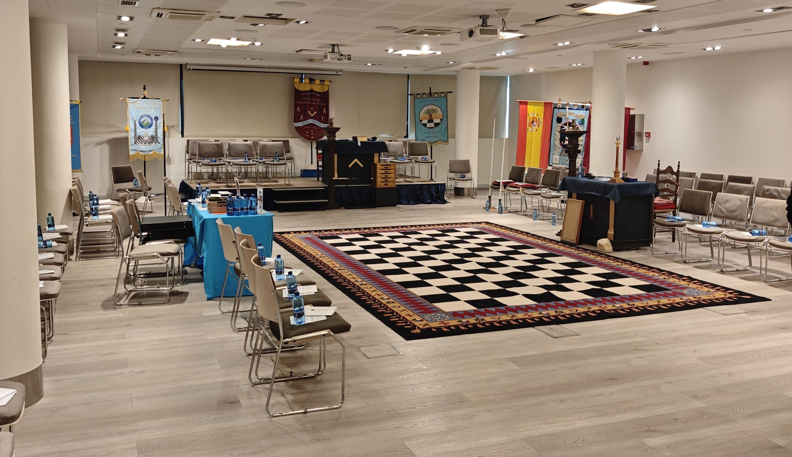
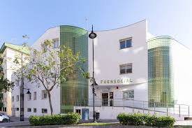
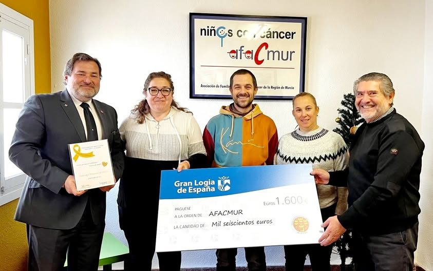

XVI Asamblea de la Gran Logia Provincial de Murcia
La Gran Logia Provincial de Murcia celebró el 18 de abril de 2026 su XVI Asamblea en los Salones del Hotel Agalia de Murcia, con la participación de más de cien hermanos, entre miembros de las logias de la provincia y visitantes procedentes de otras Logias Provinciales.
La Asamblea estuvo presidida por el Gran Maestro Provincial R∴H∴ Luis Alcaina Guzmán, quien dirigió los trabajos del día. En el transcurso de la misma se procedió a la investidura de los oficiales provinciales para el curso 2026-2027.
La Asamblea transcurrió en un clima de fraternidad y compromiso con los valores que definen a nuestra obediencia: Tradición, Fraternidad y Servicio.




Donación de 500 € a FUENSOCIAL
La Gran Logia Provincial de Murcia donó 500 € a FUENSOCIAL, asociación de apoyo a personas con discapacidad o en riesgo de padecerla y a sus familias, a través de la Gran Logia Provincial de Andalucía. Una muestra del compromiso fraternal de la Masonería murciana más allá de las fronteras provinciales.

La Provincia de Murcia dona 1.600 € a AFACMUR
La Provincia de Murcia ha donado los 1.600 € recaudados en su Gala Provincial a AFACMUR, para su labor de ayuda y soporte a niños, jóvenes y sus familias a lo largo del proceso de tratamiento contra el cáncer.
El Gran Maestro Provincial Luis Alcaina y el Secretario Provincial Ángel Sánchez realizaron la entrega en persona.
Luz de Murcia Nº 91 dona 1.000 € en alimentos a Los Alcázares
La logia Luz de Murcia donó productos alimentarios valorados en 1.000 € a los servicios sociales del municipio para reforzar sus reservas del banco de alimentos local.
En Murcia, casi 30.000 personas dependen de los bancos de alimentos para sus necesidades diarias.
La provincia en Nemesis Radio: 15 aniversario de la Gran Logia Provincial
Representantes de la Gran Logia Provincial de Murcia participaron en el programa de Nemesis Radio con motivo de los actos conmemorativos del 15.º aniversario de la provincia.
Durante la entrevista se habló sobre la masonería, sus valores y su presencia en la Región de Murcia.